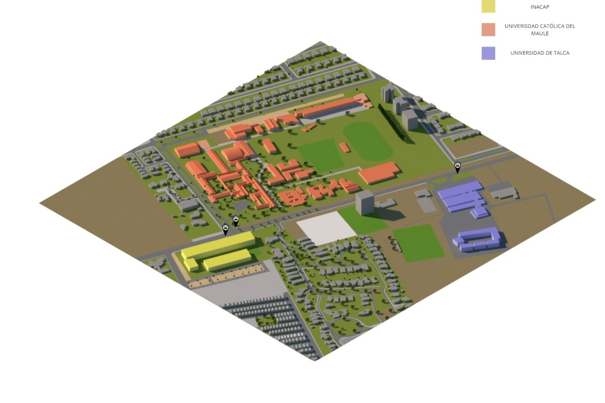
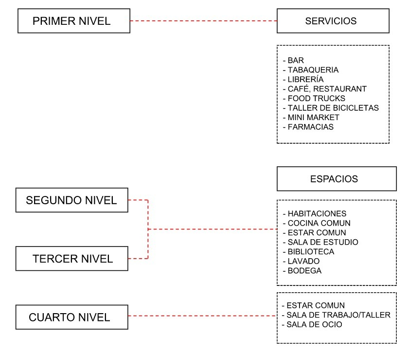

Avenida San Miguel 3696, Talca, Maule.

A través del análisis del entorno y de los elementos que componen el emplazamiento, el cual, está situado en un punto medio entre 3 universidades, las cuales entre estas se diferencian en las áreas de enseñanza que imparten y en como estas se relacionan con la ciudad.
Dicho esto, la Universidad Católica del Maule interactúa de una manera más abierta con la ciudad, a través de sus parques que colindan con la calle y la ausencia de contenciones que eviten la entrada de gente. En tanto la Universidad de Talca y la INACAP son mucho más cerradas a su entorno.
Tomando en cuenta esto, los 3 establecimientos están situados lejos de la zona comercial, lo cual representa una gran dificultad a los estudiantes para acceder a servicios, debido a las distancias que han de recorrer, además de carecer de espacios de relación en común, donde los alumnos y personal empleado de estas, puedan contar con un espacio de ocio.
Aunado a lo anteriormente mencionado, ninguna de estas universidades cuenta con residencias universitarias, además, esta zona es conocida por los altos precios de las viviendas, las cuales son poco accesibles para un estudiante universitario promedio.
